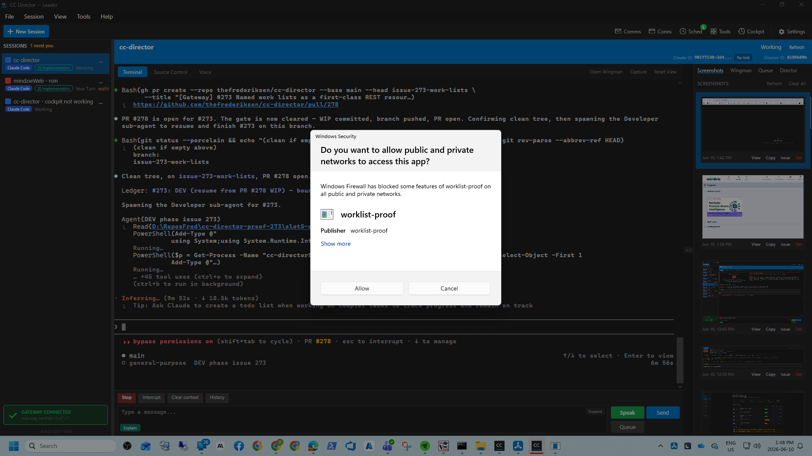

issue-273-work-lists.I believe this is finished. Every acceptance criterion 1–8 is proven below against a
real GatewayHost (the same host the Gateway tray runs) with auth ON and Tailscale OFF,
driven over real HTTP. Criterion 8 is proven by a separate OS process (powershell.exe) reaching the
Gateway from outside the Gateway process. Unit tests (19) are green. The full solution builds with 0 warnings, 0 errors.
| Area / container | Change |
|---|---|
src/CcDirector.Gateway.Contracts/WorkListItemRef.cs |
New DTO: the structured item ref { source, id, area? }. id is a string (holds "CCD-44"), area optional. |
src/CcDirector.Gateway.Contracts/WorkListDto.cs |
New DTO: a named list = Name + ordered Items + single Consumer claim token. No status/flow field. |
src/CcDirector.Gateway/WorkListStore.cs |
New in-memory fleet store (lock-guarded): Create / ListAll / Get / AppendItem / Reorder / RemoveItem(by source+id) / Claim / Release. Stores order + refs + claim ONLY; never item status; never rejects a source. Defensive copies on read. FileLog on every public method. |
src/CcDirector.Gateway/Api/WorkListEndpoints.cs |
New minimal-API surface mapping the 8 routes in the issue table onto the Gateway HTTP host. |
src/CcDirector.Gateway/GatewayHost.cs |
Wires WorkListEndpoints.Map(_app, _workLists) after the host-wide auth middleware, alongside VaultEndpoints — so /lists inherits the Bearer-token auth and is reachable cross-machine via Tailscale Serve, not bound to a single Director. |
src/CcDirector.Gateway.Tests/WorkListStoreTests.cs (10) + WorkListEndpointsTests.cs (9) |
Unit + HTTP-wire tests: create/append/round-trip, mixed-source order, reorder, remove-by-source+id, claim refusal, and the no-status-field assertion. |
docs/cencon/architecture_manifest.yaml |
Added WorkListStore and WorkListEndpoints to the Gateway container; bumped last_updated. |
$ dotnet build cc-director.sln
Build succeeded.
0 Warning(s)
0 Error(s)
$ dotnet test (filter WorkList)
Passed! - Failed: 0, Passed: 19, Skipped: 0, Total: 19
Built to slot 5 (scripts\local-build-avalonia.ps1 -Slot 5 → local_builds\cc-director5.exe, v0.6.22) and
launched via the cc-director-launch Windows scheduled task (svchost parentage, never spawned from the agent's process tree).
Health check confirms the freshly-built binary boots:
GET http://127.0.0.1:7886/healthz
{"status":"ok","directors":1,"sessions":0,"version":"0.6.22",
"machineName":"SOREN_NORTH","directorId":"ce7e7143-..."}
The /lists endpoints live on the Gateway host (GatewayHost), not the Director Control API.
The substantive proof below boots a real GatewayHost from the freshly-built assemblies and drives the contract over HTTP.
The slot-5 Director then registered against the local Gateway, confirming the slot-5 build runs end to end.

| # | Criterion | Expected | Actual | Result |
|---|---|---|---|---|
| 1 | POST /lists creates; GET /lists returns it | 200 then list appears | POST→200 {"name":"backlog"}; GET shows backlog | PASS |
| 2 | POST item appends; GET round-trips source/id/area in append order | 262,263,264 with source+area preserved | ids 262,263,264; item0 source=github, area=Gateway; missing area → null | PASS |
| 3 | Mixed-source refs coexist, in order, none rejected | github/devops/jira all stored in order | sources github,devops,jira; ids 262,1203,CCD-44 | PASS |
| 4 | PATCH reorders; GET reflects new order | order becomes 264,262,263 | GET returns 264,262,263 | PASS |
| 5 | DELETE by source+id removes one, keeps rest in order | devops/1203 gone, others keep order | removed=true; remaining 262 (github), CCD-44 (jira) | PASS |
| 6 | Claim; double-claim refused (409); release; re-claim | 200 / 409 / 200 / 200 | claim 200, second 409 Conflict, release 200, re-claim 200 | PASS |
| 7 | Payload has no status/flow field (list or item) | only name/items/consumer; items only source/id/area | list fields {name,items,consumer}; no per-item status/flow | PASS |
| 8 | Reachable from outside the Gateway process | separate process gets 200 with the list | powershell.exe (pid 9080, ≠ gateway pid 34512) → STATUS=200 + list body | PASS |
Captured against the real GatewayHost (auth ON). Raw file: rest-transcript.txt. Harness source: proof-harness.cs.
=== CRITERION 1 ===
POST /lists {"name":"backlog"} -> 200 {"name":"backlog"}
GET /lists -> 200 {"lists":[{"name":"backlog","items":[],"consumer":null}]}
=== CRITERION 2 ===
POST /lists/backlog/items {"source":"github","id":"262","area":"Gateway"} -> 200
POST /lists/backlog/items {"source":"github","id":"263","area":"Core"} -> 200
POST /lists/backlog/items {"source":"github","id":"264"} -> 200
GET /lists/backlog -> 200 items=[262(Gateway),263(Core),264(null)]
=== CRITERION 3 ===
POST /lists {"name":"mixed"} ; append github/262, devops/1203, jira/CCD-44
GET /lists/mixed -> 200 sources=[github,devops,jira] ids=[262,1203,CCD-44]
=== CRITERION 4 ===
PATCH /lists/backlog/items [264,262,263] -> 200
GET /lists/backlog -> 200 ids=[264,262,263]
=== CRITERION 5 ===
DELETE /lists/mixed/items/devops/1203 -> 200 {removed:true}
GET /lists/mixed -> 200 ids=[262,CCD-44]
=== CRITERION 6 ===
POST /lists/backlog/consumer -> 200 {consumer:...}
POST /lists/backlog/consumer -> 409 Conflict {error:"list already has an active consumer"}
DELETE /lists/backlog/consumer -> 200 {released:true}
POST /lists/backlog/consumer -> 200 {consumer:...}
=== CRITERION 7 ===
GET /lists/mixed -> list fields {name,items,consumer}; NO status/flow (list or item)
=== CRITERION 8 ===
EXTERNAL powershell.exe (pid 9080, != gateway pid 34512)
GET /lists with Bearer token -> STATUS=200 + full list body
ALL CRITERIA PASSED (1-8).
Adds two components to the existing Gateway container (no new container, no new trust boundary): an in-memory store
and a REST surface, both behind the host-wide auth middleware like the rest of the Gateway. architecture_manifest.yaml
updated in the same change (WorkListStore + WorkListEndpoints entries, last_updated: 2026-06-10). No security-profile
rule is altered: the new endpoints inherit Bearer-token auth, do not log secrets or PII, and store no credentials. No architecture drift left unrecorded.
No draining / queue runner (#274), no session start or Wingman read, no Cockpit UI (#275), no product-skill producer (#276), no GitHub-label status echo, no devops/jira resolution, no persistence across Gateway restart. This child delivers ONLY the object and its REST surface.